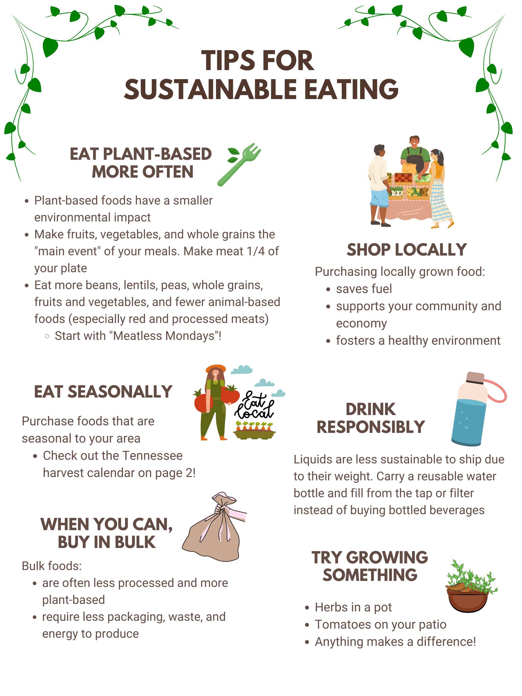

BLOG_1 ‚è¨ Home Improvements While homes may not pollute as much as corporations do, there are many things you as a homeowner can do to make your home a more eco friendly house. It is important to make a change wherever possible, and your home is something you have control over - so why not make the change? Here is a list of things you can do, from home improvements that require significant up-front capital to small, easy changes that can have a big impact. To help the environment, you don't need to go completely off-grid. No matter your budget and lifestyle, there are eco-friendly home improvements that can lessen your carbon footprint, reduce your amount of waste and support the well-being of our planet. 1. Renewable Energy for Electricity Solar photovoltaic (PV) installations convert the sun's energy into electricity using photovoltaic cells or solar panels. This allows you to generate your own reliable, sustainable and low-maintenance source of energy, saving the average UK household one tonne of carbon per year, according to the Energy Saving Trust.Solar PV can also be combined with electric heating systems, such as air source heat pumps, to run your heating and hot water entirely from renewable sources. 2. Energy Efficient Lighting Energy-saving light bulbs last up to 12 times as much as traditional bulbs, providing the same light quality for much less energy. 80% of the energy used to power traditional bulbs is lost in heating energy, whereas LED light bulbs run at 80-90% energy efficiency.According to the Energy Saving Trust, they can reduce carbon emissions by up to 40kg annually. 3. Use Eco-Cleaning Products Many mainstream cleaning products containing detergents, preservatives, or foaming agents are made from various toxic chemicals that wash up into streams and rivers, causing water pollution that enters ecosystems and damages biodiversity. Switching to products that contain sustainably grown or raised ingredients and non-synthetics reduces the risk of exposure to toxic chemicals harmful to humans and the environment. You can also easily make your natural cleaners by mixing vinegar, lemon juice and bicarbonate of soda. This sustainable and cheaper alternative reduces toxic chemicals and packaging waste in your home. 4. Biodegradable Household Products While you cannot control whether or not the products you dispose of will end up being recycled and reused, you can purchase products made of non-synthetic ingredients that are biodegradable to limit the impact of this waste. Biodegradable products dissolve due to contact with bacteria and fungi. This means that if they come into contact with nature, they won't cause any environmental harm, as they disappear through natural processes. These products might include:- Recycled toilet paper Natural ingredient shampoo Natural deodorant Bamboo toothbrush Washcloths made from hemp or agave fibres 5. Double or Triple Glazed Windows Double-glazed windows have two sheets of glass panels with a gap, and triple-glazed windows have three sheets with two gaps. The gaps keep air or gas (usually argon gas) vacuum-sealed. The gas prevents heat loss since it is a poor thermal conductor, so heat cannot easily pass through it. Low-E glass is most effective for preventing heat loss as it has an invisible layer of metal oxide on one internal layer reflecting heat directly inside. 6. Cavity Wall Insulation In older buildings with cavity walls, an inner and outer wall with an air gap in between, it's a good idea to fit some insulation to optimise your home, especially if you're considering investing in a heat pump. Insulation comes in various types and materials, including wood fibre and polystyrene. Insulation boards are best suited to large areas and cavity walls. For keen DIY-ers, this type of insulation is fairly easy to cut and fit yourself. Simple Energy Advice says up to 25% of your home's heating energy is lost in the roof. You can stop rising heat from escaping through your loft by laying down blanket loft insulation rolls that you can alter to fit between the joists in your loft. Gaps between older floorboards are inevitable as the wood expands and contracts due to varying air humidity levels. This causes avoidable draughts, which waste your home's heating energy. You can fill these to exclude draughts using dust, resin or acrylic fillers, or wood filler strips, which you can find in most DIY stores. BLOG_2 ‚è¨ What We Eat  What does it mean to eat for the Environment? Eating for the environment, or eating sustainably, is about choosing foods that are healthy for your body and the world around you. Sustainable eating patterns help conserve natural resources while also supporting local farms. Start by eating a more plant-based diet. This includes eating more legumes (beans, lentils, and peas), whole grains, vegetables, fruits, and fewer animal-based foods, such as red meat and cheese. Can you still eat meat and be Environmentally friendly? The short answer is yes. Eating meat is an important aspect of many cultures, religions, and personal preferences. The first step is to focus on where you buy your meat. Look into joining a local meat CSA (community supported agriculture) or purchase meat from the local farmer's market. These meat purchases can be more expensive, so consider decreasing the amount of meat you eat overall. Instead of making meat the focus of a meal, make it a small part. Fill most of your plate with fruits, vegetables, and whole grains. You can also incorporate ‚Äúmeatless Mondays‚Äù each week. Every small action makes a difference, so be thoughtful about your food choices and do what feels sustainable for you and your family. Check out this helpful handout for more information and tips on sustainable eating . 1. Eat Less Meat Meat and dairy are responsible for most GHG emissions in the agriculture industry. Emissions occur from the production stage to processing, packaging, and finally being delivered. Farming releases two powerful greenhouse gases: methane from livestock during digestion and nitrous oxide, an indirect product of organic and mineral nitrogen fertilisers. As most emissions result from producing and preparing meat and dairy, consuming less meat would reduce GHG emissions. While some opt to drastically change their diets to a vegan one drastically, simply reducing your intake of meat can already have a big impact. 2. Shop for Local Produce The average item of fresh food travels 1,500 miles before we buy it. These carbon-heavy value chains create emissions through transport, refrigeration and production processes. You can eliminate this by buying from local producers where you can. A well-established local food economy strengthens supply chains, meaning there are more supply options during shortages. Local, seasonal produce also has higher nutritional value since it has spent less time from its source. Meanwhile, international produce is grown to artificially exceed its natural shelf life, which compromises its nutritional value. 3. Limit Food Waste In India, 40% of the food wasted is equivalent to nearly 92,000 crore/year. This is equivalent to nearly 1% of the GDP which is depleted in the form of food wastage in India. Each person in India wastes 55 kg of food per year as per UN Environment Programme's report. You can limit your household food waste by portioning your meals reasonably, only buying what you need and using food waste as fertiliser for soil and plants. BLOG_3 ‚è¨ At Work Being conscious of the environment does not have to be limited to the home. There are many different things that employees can do to minimise environmental damage and make activities at their workplace more sustainable. 1. Encourage the Mantra 'Reduce, Reuse, Recycle' These three well-known waste management principles will make your office more eco friendly. Offices should set up different containers for different types of products. Use recycling bins for paper, plastic, and soft drink cans rather than throwing everything out in one bin. 2. Use Recyclable Food Containers to Minimise Waste As concerns about the environment continue to grow, it is important to consider the impact of our food packaging. Choosing recyclable food packaging can positively impact the environment and our health. In this article, we will discuss the importance of choosing recyclable food packaging and how it can benefit both our health and the environment. When serving food at the office cafeteria, offer employees recyclable food containers so that they can take any leftover food home. This will greatly reduce food waste, a big issue in the UK. Recyclable food packaging is packaging that can be recycled after use. It is made from materials that can be easily recycled, such as paper, cardboard, glass, and certain types of plastic. This type of packaging is designed to be environmentally friendly, reducing waste and pollution. 3. Use Electricity Wisely Offices naturally require electricity to power their equipment, amenities, and facilities. However, knowing about energy consumption and what is required is important. Companies could contribute to a greener office by ensuring that electric devices are plugged off when not in use. It's good to stay aware of energy consumption and to make changes when the usage is predicted to go above the limit set for the month. Moreover, an increasing number of large tech corporations are using green energy to meet their electricity needs. 4.Encourage Public Transportation for Employees Depending on the distance from the employee‚Äôs home to the workplace, there are different ways to commute to work. While using a car may seem the easiest and fastest option, taking the train or bus would pollute less. You could ride a bicycle to work depending on your city's biking infrastructure. BLOG_4 ‚è¨ At School There are a lot of things that parents can do to ensure that their kids are more environmentally friendly at school. Whether it's walking your kid to school or ensuring that they use environmentally friendly school supplies to minimise the damage done to nature. Inspiring kids to contribute to a greener environment and world is something we could and should do. 1. Make Green Choices to Go to School As driving emits pollution, parents should consider alternative ways of getting their children to school, whether walking them to school or using public transportation. Using the car less can make a huge difference to the environment in the long run. In some cities like Copenhagen and Amsterdam, parents use cargo bikes to ride their children to school, which is a great eco friendly solution to using a car. 2. Use Containers, Not Paper Bags When making lunch for children to bring to school, parents should invest in reusable lunch boxes instead of giving them food in paper bags to be thrown out. If a food item needs to be wrapped, avoid cling wrap and opt for more environmentally friendly wrapping materials like beeswax. 3. Invest in Electronic Devices Instead of Paper As technology adapts to different scenarios, many different products can be used to take notes. Although investing in a laptop or a tablet may be expensive, your child could save time taking notes and help reduce paper waste at school. BLOG_5 ‚è¨ How We Travel While people often think of sustainability as minimizing our environmental footprint, it is much broader and all-encompassing than this. Sustainable tourism is all about achieving a balance between economic growth, human well-being, and environmental health. It focuses on reducing tourism's negative impacts and on maximizing its positive benefits for communities, cultures, ecosystems, and the planet. Sustainable tourism accounts for both the immediate impacts felt today as well as those longer-term impacts that will be experienced by future generations. 1. Practice Sustainable Tourism Increasingly, people are engaging more in sustainable tourism, which involves limiting their carbon footprint while travelling, being tactical with their spending power and helping sustain the natural environment they have the privilege to visit. This helps prevent over-tourism, which is the overcrowding of tourist destinations that disrupts the local way of life through the rise in housing and renting costs and the commodification of local traditions. Pollution, especially through excess waste, leads to the degradation of natural or archaeological sitesand the depletion of natural resources, including water, soil nutrients and biodiversity. Below are just some eco-tourism tips to consider for your next trip:- Choose tour operators that invest in the local communities where they conduct their business Travel off-season Don't litter Choose less tourist-heavy locations Use public transport as much as possible Stick to footpaths Use reusable containers and bottles rather than disposable paper plates, cutlery and cups Limit your energy use in accommodation such as by taking shorter showers, reducing air-conditioning use Spend in local shops and restaurants Use Environmentally Friendly Travel Products 2. Limit Plane Travel Emissions from aviation could take up one-sixth of the carbon budget remaining to limit 1.5 degrees of global warming. Within the aviation industry, options for rapid decarbonisation are slow and limited. Therefore, personally limiting flights is the best way to reduce emissions. This is until sustainable aviation has become a viable, mainstream alternative. Train travel is becoming more pleasant and economical, with new expanding train networks developing across Europe. 3. Avoid Cruise Holidays Cruise holidays have become increasingly popular. However, these big ships contribute massively to GHG emissions. Carnival Corporation's fleet of 47 cruise ships emits 10 times more sulphur oxides (SOx) than 100 million cars. It is important to be aware of your holiday's footprint on the environment and opt for more sustainable holidays when possible. 4. Electric Cars Diesel- and petrol-fuelled cars are major contributors to global warming, mainly due to the amount of CO2 emissions they emit. 27% of the UK's total emissions came from transport in 2019, with 91% from road transport vehicles. Electric vehicles are the most sustainable driving method since they don't use traditional fuels. They don't produce any air pollutants from gas, particulates, or air toxics. More way to be Eco-friendly watch youtube video üîΩ